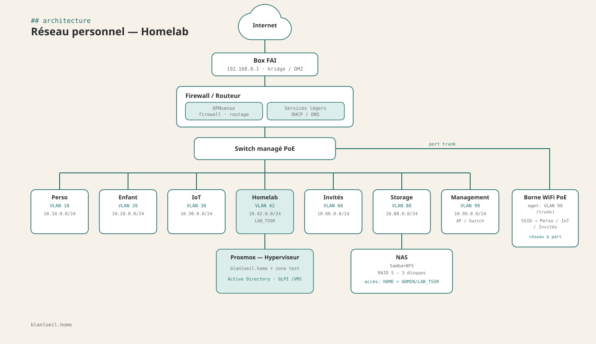

Projet
Une infrastructure complète en cours de conception pour pratiquer en conditions réelles : virtualisation, segmentation réseau, annuaire d'entreprise, supervision.
Impossible d'apprendre l'administration systèmes & réseaux uniquement sur le papier, j'ai pour projet la création d'un réseau domestique permettant l'apprentissage et garantissant un maximum de sécurité. Ce homelab sera le terrain d'entraînement en conditions réelles, en parallèle de la formation TSSR : chaque notion vue en cours (AD, DNS, segmentation réseau) pourra être reproduite, cassée et réparée à la maison.
blanloeil.home qui sera déployé et automatisé via des scripts PowerShellrealmd/sssd, aux côtés des postes WindowsTransferts de zone DNS en échec. Lors de tests en environnement virtualisé, le DNS secondaire ne recevait pas les mises à jour de zone : après investigation, le problème venait d'erreurs de syntaxe dans les fichiers de zone BIND9, corrigées puis validées en forçant un transfert de zone manuel.
Lors de tests sur des machines virtuelles, jointure au domaine impossible depuis un poste Debian 13/XFCE. Deux causes cumulées : une mauvaise configuration DNS dans /etc/resolv.conf qui empêchait la résolution du contrôleur de domaine, et une restriction du groupe realm permit qui bloquait la connexion des nouveaux utilisateurs AD une fois la machine jointe. Les deux corrigés, la connexion SSO a fonctionné normalement.
Un domaine Active Directory fonctionnel (blanloeil.home), un réseau segmenté en 7 VLAN, un serveur de stockage accessible depuis l'extérieur et une infrastructure qui sert de banc d'essai permanent pour les prochains sujets de la formation.